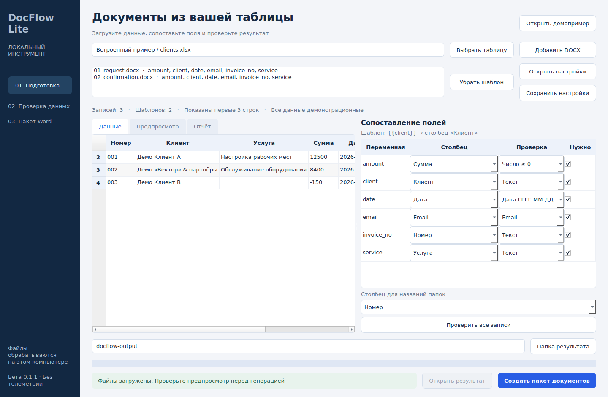

Подготовьте таблицу
Первая строка — названия столбцов. Каждая следующая запись — данные для отдельного комплекта.
Клиент · Услуга · Сумма · ДатаЗаявки и подтверждения из Excel или CSV для сервисных компаний и подрядчиков. Одна запись — комплект Word. DocFlow Lite подставляет данные в ваши шаблоны и показывает ошибки.
Windows 10 (1809+) / 11, x64. Portable ZIP без установки Python.
Программа бесплатна. Настройка ваших документов — от 5 000 ₽.

ПРОВЕРЬТЕ НА ПРИМЕРЕ
Это результаты встроенного демопримера из приложения. Выберите строку и посмотрите текст документа или найденные ошибки.
Все имена и реквизиты вымышлены.
Здесь показан заранее полученный текстовый результат. Загрузка таблиц и создание DOCX выполняются в приложении.
ВАШ ПРИВЫЧНЫЙ WORD
Первая строка — названия столбцов. Каждая следующая запись — данные для отдельного комплекта.
Клиент · Услуга · Сумма · ДатаВставьте в DOCX простые переменные и выберите соответствующие столбцы в приложении.
{{client}} → КлиентПосмотрите текст, проверьте данные и получите отдельную папку с DOCX и отчётом. Исходники сохраняются.
Заявка + подтверждение + отчётДЛЯ СЕРВИСНЫХ КОМПАНИЙ И ПОДРЯДЧИКОВ
Два первых документа уже есть в бесплатном примере. Для своего сценария используйте утверждённые формы вашей компании.
Это примеры задач, а не клиентские кейсы.
Номер, клиент, услуга, сумма и дата из строки Excel — в отдельный DOCX.
Второй документ с теми же данными без повторного ввода. Оба файла — в одном комплекте.
Имя, номер обращения и фиксированный текст — по вашей форме, после проверки совместимости.
ПРИЛОЖЕНИЕ В РАБОТЕ
Кадры работающего интерфейса с тестовыми данными: загрузка, текстовый просмотр, проверка и результат.
ПРОГРАММА БЕСПЛАТНА · НАСТРОЙКА ПО ЖЕЛАНИЮ
Windows-программа, все доступные функции версии 0.1.1, демонстрационные шаблоны и примеры. Без подписки и платы за каждый созданный документ. Ограничения версии описаны ниже.
Скачать программу и демо ↓Платная услуга — подготовка ваших документов к работе: разметка DOCX, связь с Excel/CSV, проверки полей и сохранённый сценарий.
ОДИН СЦЕНАРИЙ
от 5 000 ₽
Один простой DOCX-шаблон и одна таблица с данными.
Результат: шаблон, таблица-пример, профиль, пробные DOCX и отчёт. Срок и окончательная цена — после оценки файлов.
Заказать настройкуКОМПЛЕКТ ИЗ ОДНОЙ ТАБЛИЦЫ
от 9 000 ₽
До трёх простых DOCX-шаблонов с общими данными.
Результат: комплект шаблонов, таблица-пример, профиль, пробные DOCX и отчёт. Срок и окончательная цена — после оценки файлов.
Заказать комплектСтартовые цены для первых заказов. Сначала проверим ваши формы и согласуем состав, стоимость, срок и критерии приёмки. Простые шаблоны содержат фиксированный текст и таблицы; циклы, повторяющиеся строки, PDF-экспорт, электронная подпись, интеграции и юридическая разработка документов в услугу не входят. Дополнительные шаблоны и обучение обсуждаются отдельно, без обязательного созвона.
КАК ЗАКАЗАТЬ НАСТРОЙКУ
На сайте нет оплаты и автоматического оформления заказа. Для первичной оценки не нужны реальные данные клиентов.
Начните с короткого описания. При необходимости помогу определить, подходит ли ваш документ для текущей версии.
Заказать настройку Написать в TelegramИли email: rostg2007@gmail.com
Кнопка открывает Telegram с заготовкой сообщения. Замените подсказки в скобках и отправьте его самостоятельно. Если текст не появился, напишите: «Нужна настройка DocFlow Lite», укажите документы, число шаблонов и срок. Сайт не отправляет заявку.
Если Telegram недоступен, используйте email. Если почтовая программа не открылась, скопируйте адрес. Не присылайте пароли, персональные данные клиентов или конфиденциальные документы для первичной оценки. Подробнее о данных.
За подготовку ваших DOCX-шаблонов, сопоставление с таблицей, проверки, профиль и проверенный пробный комплект. Самостоятельное использование доступных функций версии 0.1.1 бесплатно.
Описание задачи, названия документов, желаемый срок и обезличенный DOCX с 2–3 вымышленными строками Excel/CSV. Уберите реальные ФИО, телефоны, адреса, реквизиты, подписи, комментарии и скрытые листы.
Это стартовая цена настройки одного простого шаблона. Комплект до трёх — от 9 000 ₽. Окончательная сумма и срок зависят от файлов и фиксируются до платной работы. Новые требования оцениваются отдельно, после согласования.
Используем вашу утверждённую форму. Текстовый предпросмотр не показывает вёрстку Word, поэтому пробные DOCX нужно открыть в вашем Word или LibreOffice. Совместимость проверяем на примере до согласования заказа.
Сначала согласуем задачу, цену, срок, исполнителя и документы об оплате в переписке. Сайт не принимает деньги. Начать можно в Telegram или email без созвона; обучение и его формат обсудим при необходимости.
Сообщу об ограничении после просмотра примера. В текущей версии нет циклов, строк переменной длины, PDF-экспорта и интеграций. Заказ на неподдерживаемую функцию не подтверждаем.
БЕСПЛАТНАЯ ПРОГРАММА · БЕТА 0.1.1
Приложение для Windows, два DOCX-шаблона и таблица с вымышленными данными. Распакуйте весь архив, откройте DocFlow-Lite.exe и нажмите «Открыть демопример».
Скачать для WindowsPortable ZIP, около 49 МБ. Windows 10 (1809+) / 11, x64. Python устанавливать не нужно.
Сохраните папку _internal рядом с EXE. Бета без цифровой подписи; Windows может показать предупреждение.
Запуск и генерация проверены в Windows CI. Владелец подтвердил запуск на своём Windows-ПК; полная ручная проверка генерации и оформления DOCX пока не подтверждена.
Релиз, инструкция, контрольные суммы и ограничения
Отдельный ZIP с исходниками, таблицей, шаблонами и готовыми DOCX. Для запуска исходников нужен Python 3.12 и интернет при первой установке библиотек. Генерация выполняется локально.
Таблица, шаблоны, настройки, выходные документы и отчёты. Приложение не отправляет их на сервер, не содержит телеметрии и не требует аккаунта. Позаботьтесь о доступе к папке результатов: DOCX содержат ваши данные.
В версии 0.1.1 доступен текстовый просмотр. Финальные поля, переносы страниц и оформление проверяйте в Word или LibreOffice перед отправкой.
До 5000 записей, 100 столбцов и 20 шаблонов за запуск. Поддерживаются простые переменные в тексте, таблицах и колонтитулах. Циклы, выражения, макросы, внешние связи, поля Word, надписи и переменные в примечаниях не поддерживаются. Формулы Excel нужно предварительно заменить значениями.
Повторяющиеся строки и циклы в этой версии отсутствуют. Можно заполнять фиксированный набор полей в заранее подготовленной таблице Word.